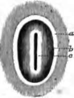
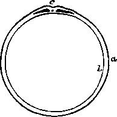
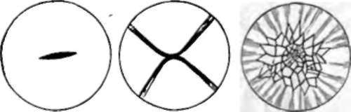
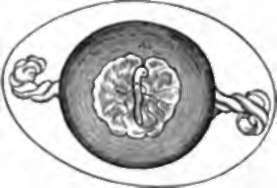
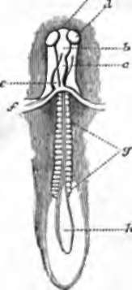

207. The Embryo
Description
This section is from the book "Animal Physiology: The Structure And Functions Of The Human Body", by John Cleland. Also available from Amazon: Animal Physiology, the Structure and Functions of the Human Body.
207. The Embryo
We have seen that after impregnation the contents of the ovum are converted, by the disappearance of the spermatozoa and germinal vesicle, and the cleavage of the yelk, into a mass of nucleated corpuscles. This happens in the lower part of the Fallopian tube, and thereafter the interior of the yelk becomes transparent, and the nucleated corpuscles are aggregated beneath the zona pollucida in the form of a hollow sphere, which is termed the blastoderm or germinal membrane. Within a few days after the ovum has reached the uterus, a clear area, with an opaque border, makes its appearance on one side of the germinal membrane, and in this area a white streak, which is the first appearance of the embryo. This streak consists of a furrow with elevated margins, the primitive groove; and beneath the groove a rod-like body soon appears, the chorda dorsalis or notochord. At the circumference of the embryo and beyond it, the germinal membrane splits up into two layers, and this division proceeds completely round the yelk; but if a section be made through the embryo, three layers, much more closely connected, are seen; the innermost of which is converted into the epithelial lining of the alimentary canal and its appendages, while the middle layer forms the principal part of the body, and the outer layer, so far as it lies within the primitive groove, is devoted to the formation of the cerebro-spinal axis, and, beyond the margin of the groove, is converted into the cuticle of the whole body.
Fig. 148. Primitive Groove of Rabbit, magnified five diameters, a, Area opaca; b, area pellucida; c, primitive trace, with the groove in the middle. After Bischoff.
Fig. 149. Section of Mammalian Ovum: diagram, a, Outer layer of germinal membrane; b, inner layer; c, primitive groove, and, beneath it, section of chorda dorsalis, with the rest of the middle layer on each side.
208. At this point it may be well to pause for a moment, and direct the student's attention to some of the peculiarities of the eggs of birds, since it is in the hen's egg that by far the easiest opportunity is obtained for studying embryology from nature. The hen's egg becomes impregnated in the upper part of the oviduct, and the cleavage of the yolk is confined to a white spot at one side called the cicatricula. This takes place by first one cleft appearing, then four, then others between them, radiating from a centre, and portions between these radiations being separated irregularly, and afterwards subdividing; but the yolk beyond the cicatricula takes no part in the process. In succeeding parts of the oviduct, the albumen and the shell are deposited. If a hen's egg be placed on its side, and the shell be broken on the side which happens to be uppermost, the cicatricula is always found on the corresponding part of the yelk The reason of this is, that the albumen first deposited round the vitelline membrane is prolonged in two twisted strings, chalazae, towards the extremities of the egg, to be there retained, to a certain extent, in position. By these chalazae the yolk is suspended, and being lighter on the side on which the cicatricula is placed, it turns that part always upwards away from the damp ground, and towards the warmth of the hen's body. In consequence of this arrangement, there is nothing easier than to obtain a view of the early stages of embryonic growth in the chick, from the appearance of the primitive groove onwards. If it be sought to hatch the eggs artificially, care must he taken not to allow their temperature to vary more than a few degrees above or below 102° F. 209. The primitive groove is the future cftrebro-spinal canal, and is converted from an open groove to a closed cylinder by its margins growing up and meeting together above it. In a similar way its contents likewise become cylindrical; the tube thus formed being converted in its lower part into the spinal cord; while in the cerebral part, which at this early stage is little less than half the length of the whole embryo, it is swollen into three successive vesicles. The first or foremost of these cerebral vesicles is that from which the third ventrical of the brain, with the hemisphere-vesicles coming off from it, is developed; the second is that from which the aqueduct of Sylvius, with the corpora quadrigemina and other parts surrounding it, is formed; and the third is the part from which the cerebellum, pons Varolii, and medulla oblongata take origin.
Fig. 150. Cleavage of Cicatbicula of Hem's Egg. After Coste.
Fig. 151. Hen's Ego, showing chalazae, and embryo of three days incubation, with area vasculosa around it.
The chorda dorsalis or noto-chyrd runs down the centre of the middle layer of the embryo. It is a purely cellular structure, and continues so as long as it exists, but in most animals it is not permanent. In sturgeons, lampreys, and some other fishes, it continues through life, being developed into a thick column of large, distinctly-walled cells, with a thick fibrous sheath round about, which serves instead of a chain of bodies of vertebræ. In other vertebrate animals, the bodies of the vertebræ make their first appearance round the sheath of the chorda dorsalia, and constrict that structure so as to leave a bead-like dilatation in the position of each intervertebral disc; ultimately, however, in the higher vertebrate the whole chorda dorsalis completely disappears, even the intervertebral discs being developments rather of its sheath than of its proper substance. The chorda dorsalis has been traced in young mammals into the region of the sphenoid bone, where it ends in a point imbedded in the cartilage of the base of the skull.
Fig. 152. Embryo Chick, about two days old; under surface. a, b,c, First,second, and third cerebral vesicles; d, primary optic vesicle; e, rudiment of heart; f, fold at which the cephalio plate is continuous with the cephalic hood, and the yelk sac continuous with the cul-de-sac from which the pharynx is formed; g, primordial vertebra ; h, unclosed part of the primitive groove.
Continue to:
- prev: 204. The Ovaries Of Persons Who Have Died In The Prime Of Life Present
- Table of Contents
- next: The Embryo. Continued